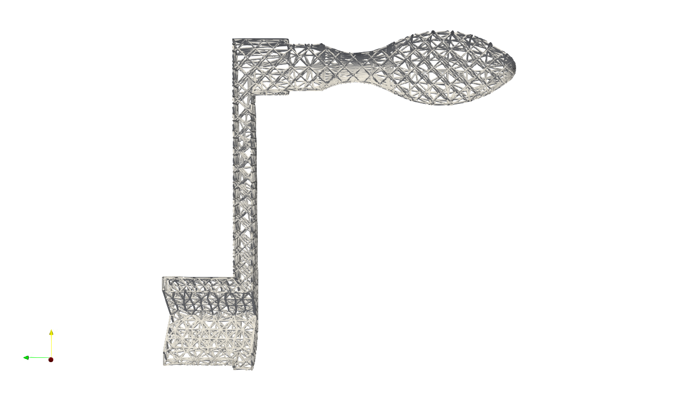
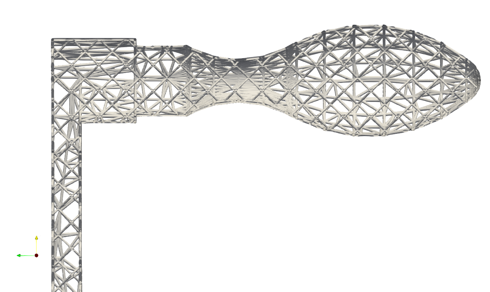

Mesh Process#
A mesh is a discrete approximation of a given shape, consisting of vertices, edges, and faces that define its structure. In Artisan, meshes serve as the foundation for constructing conformal lattice infill, enabling intricate and efficient design configurations. Users can leverage these meshes for a variety of design purposes. Artisan continually enhances its mesh processing capabilities, introducing new functions and tools to expand the possibilities for design.
Extract External Surface Mesh#
User may extract the surface mesh (either Quad or Triangle) from the volumetric mesh. The extracted mesh can be used, for instance, as conformal mesh for external reinforcement bars and patterns. Below shows the keyword Proc_Mesh_ExtractSurf to extract the surface mesh from user given mesh, user many find this example under the folder .//Test_json//MeshLattice//ExtractMeshSurf//ExtractMeshSurf.json.
{
"Setup": {
"Type": "Sample",
"Sample": {
"Domain": [[-10.0, 10.0], [-10.0, 10.0], [-10.0, 10.0]],
"Shape": "Box"
},
"Geomfile": "",
"Rot": [0.0, 0.0, 0.0],
"res": [0.1, 0.1, 0.1],
"Padding": 1,
"onGPU": false,
"memorylimit": 1073741824000
},
"WorkFlow": {
"1": {
"Gen_CylindricalMesh": {
"num_elem": [3, 10, 3],
"r_range": [2.0, 8.0],
"phi_range": [0.0, 1.0],
"ori": [0.0, 0.0, -2.0],
"Height": 10.0,
"Normal": [0.0, 0.0, 1.0],
"Mesh_file": ".//Test_json//MeshLattice//ExtractMeshSurf//CylindricalMesh.med"
}
},
"2": {
"Proc_Mesh_ExtractSurf": {
"Elem_Type": "Hex",
"inp_meshfile": ".//Test_json//MeshLattice//ExtractMeshSurf//CylindricalMesh.med",
"out_meshfile": ".//Test_json//MeshLattice//ExtractMeshSurf//CylindricalMeshSurf.med",
"isSplitTris": true
}
},
"3": {
"Add_Lattice": {
"la_name": ".//Test_json//MeshLattice//ExtractMeshSurf//GenCylindricalSurfMesh.mld",
"size": [3.0, 3.0, 3.0],
"thk": 0.25,
"Rot": [0.0, 0.0, 0.0],
"Trans": [0.0, 0.0, 0.0],
"Inv": false,
"Fill": false,
"Cube_Request": {}
}
},
"9999": {
"Export": {
"outfile": ".//Test_results/CylindricalMesh_ConformalLattice.stl"
}
}
},
"PostProcess": {
"CombineMeshes": true,
"RemovePartitionMeshFile": false,
"RemoveIsolatedParts": true,
"ExportLazPts": true
}
}
The workflow item 2 is the keyword Proc_Mesh_ExtractSurf, and only takes the following 4 parameters:
Parameter |
Details |
|---|---|
|
supports |
|
file path to the input mesh file, currently supports Abaqus inp file and salome med file. |
|
file path for the export mesh file, currently supports Abaqus inp file and salome med file. |
|
a boolean type parameter, if |
Above JSON produce the following result.
And in the example ExtractSurfMesh_Sphere.json, the JSON workflow produce a partial spherical mesh, and then extract the all quad surface elements.

and the triangle surface mesh (example: ExtractMeshSurf_EngineBracket.json)
Octree Mesh#
Octree mesh generation is possible. User only need provide an input mesh to the keyword Proc_Mesh_Octree and geometric field to generate the octree mesh. Below is a simple example that generates an octree mesh using the input mesh and spherical geometry. Please note that this experimental feature may subject to change in future.
{
"Setup": {
"Type": "Geometry",
"Sample": {
"Domain": [[0.0, 1.0], [0.0, 1.0], [0.0, 1.0]],
"Shape": "Box"
},
"Geomfile": ".//sample-obj//Ball_Mesh.STL",
"Rot": [0.0, 0.0, 0.0],
"res": [5.0, 5.0, 5.0],
"Padding": 4,
"onGPU": false,
"memorylimit": 1073741824000
},
"WorkFlow": {
"1": {
"Gen_BoxMesh": {
"num_elem": [5, 5, 5],
"x_range": [0.0, 1200.0],
"y_range": [0.0, 1200.0],
"z_range": [0.0, 1200.0],
"ori": [-600.0, -600.0, -600.0],
"Normal": [0.0, 0.0, 1.0],
"z_angle": 0.0,
"Mesh_file": ".//Test_json//MeshLattice//OctTree//BoxMesh.med"
}
},
"2": {
"Proc_Mesh_Octree": {
"Type":"Geom",
"inp_meshfile": ".//Test_json//MeshLattice//OctTree//BoxMesh.med",
"out_meshfile": ".//Test_json//MeshLattice//OctTree//BoxMeshOut.inp",
"Fieldfile": ".//sample-obj/Ball_Mesh.STL",
"numCoverNodes": 4,
"refine_stepsize": 150,
"num_refinements": 3
}
},
"3": {
"Add_Lattice": {
"la_name": ".//Test_json//MeshLattice//OctTree//OctTreeConformal.mld",
"Rot": [0.0, 0.0, 0.0],
"Trans": [0.0, 0.0, 0.0],
"Inv": false,
"Fill": false,
"Cube_Request": {},
"thk": 15.0,
"size": [20.0, 20.0, 20.0]
}
},
"10000": {
"Export": {
"outfile": ".//Test_results//OctTreeMesh.stl"
}
}
},
"PostProcess": {
"CombineMeshes": true,
"RemovePartitionMeshFile": false,
"RemoveIsolatedParts": true,
"ExportLazPts": false
}
}
The keyword Proc_Mesh_Octree processes the given input mesh and generates the octree mesh. This function used the input field (here the geometric signed distance field) as design parameter. It will gradually expand the checking range (from low value to high value) to check whether the element is inside of the current range, if yes, then conduct the refinement. Those which have been inside checking multiple times, shall be refined multiple times. The details of the parameters are listed below.
Parameter |
Details |
|---|---|
|
supports |
|
file path to the input mesh file, currently supports Abaqus inp file and salome med file. |
|
file path for the export mesh file, currently supports Abaqus inp file and salome med file. |
|
In |
|
can be range from -1 to 8. If not |
|
The function will gradually expand its checking range by using this step size value. |
|
The function will gradually expand its checking range by using this step size number. |
Above JSON produce the following refined mesh,
and its cross-sectional view as below.
Skin Regeneration#
The skin cover on the periodic lattice is a common design for protecting the infill and showing a smooth finish of the lattice design. Artisan provides a mesh process function that impresses the interior boundary nodes of lattice on the skin and regenerate the skin cover mesh. The mesh can be used for further design, or the finite element meshing for CAE analysis. User can find the example below at .\Test_json\GenSkin\Crankhandle_MeshTrim_TPMS.json.
{
"Setup": {
"Type": "Geometry",
"Sample": {
"Domain": [[0.0, 1.0], [0.0, 1.0], [0.0, 1.0]],
"Shape": "Box"
},
"Geomfile": ".//sample-obj//crank_handle.stl",
"Rot": [0.0, 0.0, 0.0],
"res": [0.2, 0.2, 0.2],
"Padding": 4,
"onGPU": false,
"memorylimit": 1073741824000
},
"WorkFlow": {
"1": {
"Gen_BoxMesh": {
"Normal": [0.0, 0.0, 1.0],
"z_angle": 0.0,
"ori": [-11.0, -11.0, -80.0],
"x_range": [0.0, 25.0],
"y_range": [0.0, 76.0],
"z_range": [0.0, 79.0],
"Mesh_file": ".//Test_json//MeshLattice//GenSkin//BaseMesh.med",
"num_elem": [8, 20, 20]
}
},
"2": {
"Gen_ConformalLatticeMesh": {
"definition_file": ".//Test_json//MeshLattice//GenSkin//ConformalLattice.mld",
"out_meshfile": ".//Test_json//MeshLattice//GenSkin//BaseMeshConformal.med",
"size": [2.0, 2.0, 2.0]
}
},
"3": {
"Proc_Mesh_Trim": {
"inp_meshfile": ".//Test_json//MeshLattice//GenSkin//BaseMeshConformal.med",
"Geomfile": "",
"num_beam_refinement": 2,
"remove_short_beams": true,
"elem_type": "Triangle",
"out_meshfile": ".//Test_json//MeshLattice//GenSkin//TrimMesh.stl",
"tol": 0.001
}
},
"4": {
"Proc_Mesh_GenSkin": {
"Geomfile": "",
"lattice_meshfile": ".//Test_json//MeshLattice//GenSkin//TrimMesh.stl",
"out_meshfile": ".//Test_json//MeshLattice//GenSkin//TrimMesh_wSkin.stl",
"tol": 0.0025,
"long_edge_tol": 5.0,
"faces_angles": [0.0, 1.58]
}
}
},
"PostProcess": {
"CombineMeshes": true,
"RemovePartitionMeshFile": false,
"RemoveIsolatedParts": true,
"ExportLazPts": false
}
}
The keyword Proc_Mesh_GenSkin takes the lattice infill and original skin mesh as inputs and regenerates the skin mesh.
Parameter |
Details |
|---|---|
|
The skin mesh inputs file, if empty, Artisan will take the Geomfile in setup. |
|
The lattice infill mesh, ideally this shall be the mid-surface lattice file or the beam mesh file. |
|
The tolerance of identifying the boundary nodes on the mesh of |
|
The tolerance of identifying the long edges in the skin mesh, and if longer, Artisan will divide the long edge by inserting the nodes. |
|
The selection criteria of the mesh edge using the neighboring face angle. This can be used to identify and select the sharpe edges of the outter geometry. |
Above JSON produce the following mesh for the skin cover. One need notice that there are nodes positioned on the boundary where inner lattice met the skin cover.
The details is shown below, the nodes inserted on the lines where lattice met the skin.
This keyword can also be applied on the strut lattice. User may find the example at .\Test_json\MeshLattice\GenSkin\Crankhandle_MeshTrim_Beam.json. In the example, the geometry mesh were impressed using the strut lattice infill, and the resultant mesh were then used as skin to cover the inner lattice, as shown in the picture below.
The cross-sectional view is shown below.
 Field Driven Modification#
The mesh can be modified using the field data. The keyword Proc_Mesh_FieldDrivenMesh provides a general access of the field driven modification of the mesh.
Parameter |
Details |
|---|---|
|
The input mesh file. |
|
The export mesh file. |
|
The setup of this parameter shall be refer to the keyword |
User can find the example at \Test_json\MeshLattice\FieldDrivenMesh\FieldDrivenMesh_Attractor.json which generates exact same results as the example demonstrated for the keyword Gen_BasicCartesianHexMesh_MultiSize.